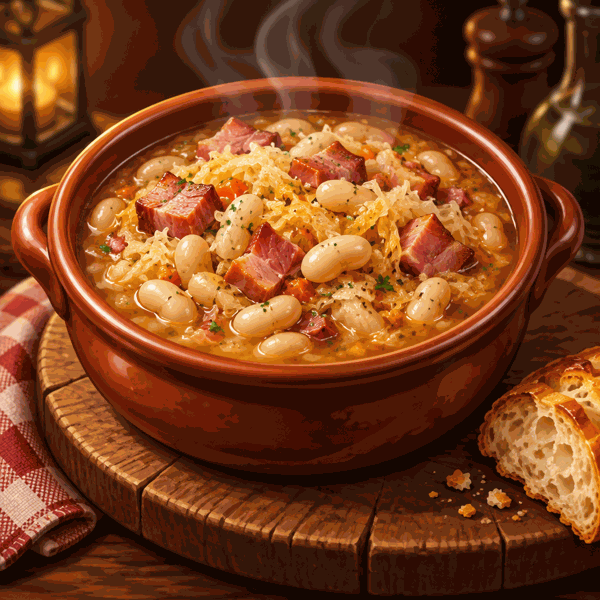

All recipes › Trieste
Journey city: Trieste
Jota
It is a border soup: it unites Italian, Slovenian and Austro-Hungarian cooking, just like Trieste.
Servings4
Prep20 min
Cook1 h 50 min
DifficultyMedium
Allergens: Gluten

Ingredients
- Dried borlotti beans (soaked 12 hours) · 250 g
- Sauerkraut · 400 g
- Potatoes · 300 g
- Smoked pork ribs or pancetta · 200 g
- Garlic · 2 cloves
- Bay leaf · 2 leaves
- Cumin · 1 teaspoon
- Flour · 1 tablespoon
- Extra-virgin olive oil · 3 tablespoons
- Salt and pepper · to taste
Step by step
- Cook the beans in 2 liters of water with the ribs and bay leaf for 1 hour.
- Add the potatoes in pieces and cook 30 more minutes.
- Meanwhile cook the sauerkraut separately with the cumin and a little water for 30 minutes. (while the potatoes cook)
- In a small pan, heat the oil with the garlic, add the flour and brown it: add this 'pesto' to the beans.
- Add the sauerkraut, mash part of the potatoes to thicken and cook everything together for 20 minutes. Salt and pepper.
Chef's tip. Like many soups, it is better the day after.
Cook this recipe in Tavolata too
In the game you match ingredients, complete orders and restore Italian cities, from Firenze to Milano. Free, with real recipes in the Cookbook.
Download on the App Store